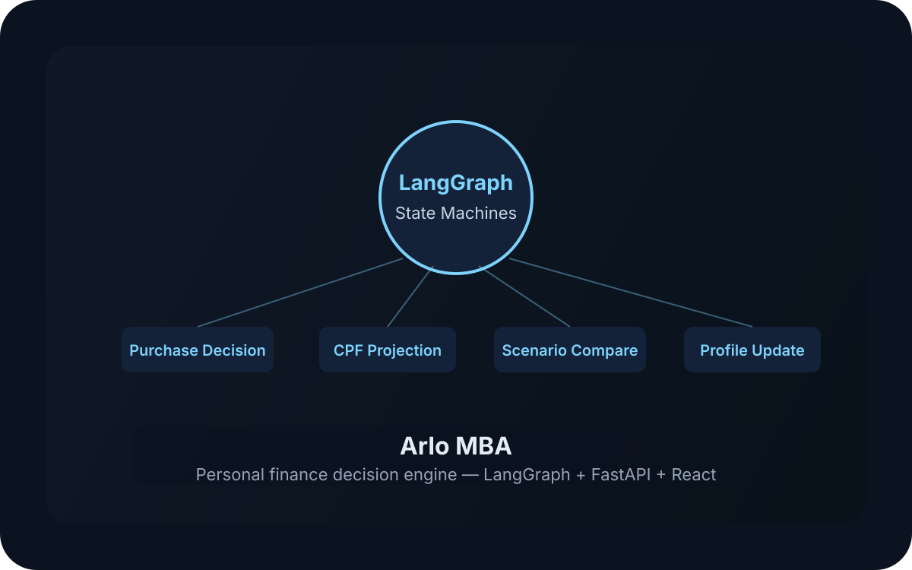

AI · Fintech · LangGraph

The problem
Singaporeans navigating major financial decisions — housing, CPF, loans — face complex, interconnected choices. CPF alone has multiple accounts (OA/SA/MA), contribution caps, annual interest crediting, and housing usage rules that most people get wrong. Existing tools are static calculators — they don't reason about your situation.
What I built
An AI-powered personal finance engine using LangGraph state machines to orchestrate multi-step decision workflows.
- Purchase Decision Graph — 8-node state machine that evaluates affordability using deterministic tools (debt-to-service ratio, savings runway, CPF projection). The LLM never generates financial numbers.
- CPF Projection Engine — 25-year timeline projecting CPF OA/SA/MA with accurate rules: 23%/6%/8% allocation on capped ordinary wages, annual Jan 1 interest crediting at 2.5%/4%/4%, housing downpayment and mortgage tracking.
- Scenario Comparison — Parallel projection branches to compare financial paths (e.g., buy vs rent, early CPF repayment vs investment).
- Profile Update Graph — Detect → Extract → Validate → Confirm → Save flow with dual-write to profile tables and journal entries.
- Real-Time Streaming — SSE endpoint with token-by-token response streaming, node progress visualization, and tool call events.
- Document Extraction — Vision-based document parsing with 10% discrepancy flagging against existing profile data.
Architecture
FastAPI backend with LangGraph orchestration. React frontend. PostgreSQL for persistent data. Anthropic Claude for vision-based document parsing. GLM-5.2 as the primary LLM via OpenAI-compatible SDK. Supabase for authentication. SSE for real-time streaming.
Challenges
- CPF rules are non-trivial: allocation percentages, AW cap, annual (not monthly) interest, housing usage restrictions
- Deterministic financial calculations must never be influenced by LLM hallucination — all numbers come from tools
- LangGraph graphs must gracefully pass through to normal chat when they don't handle the intent
- Single env toggle (
ENABLE_DECISION_GRAPH=false) must disable all 4 graphs and revert to vanilla behavior